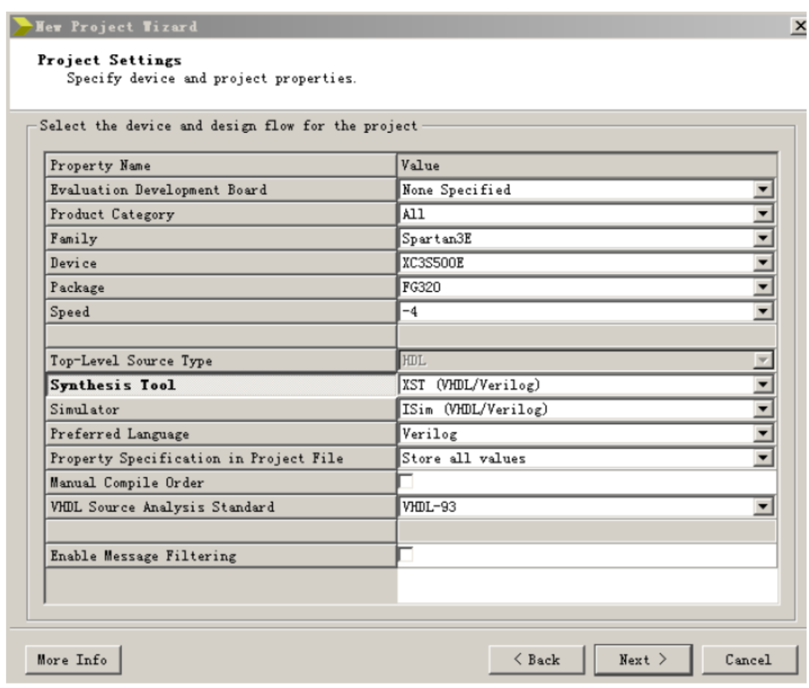
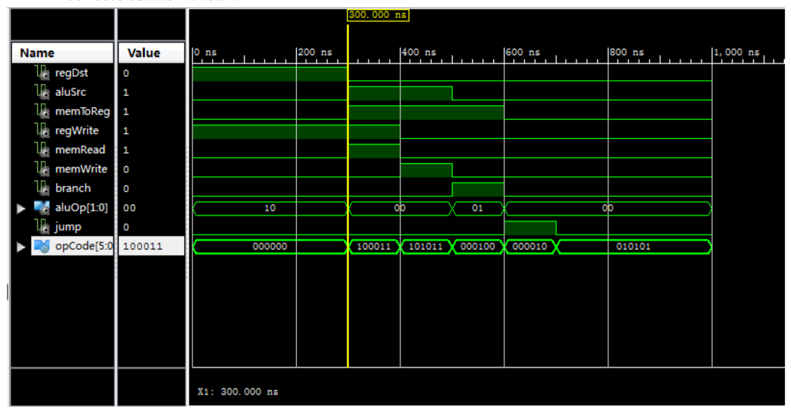
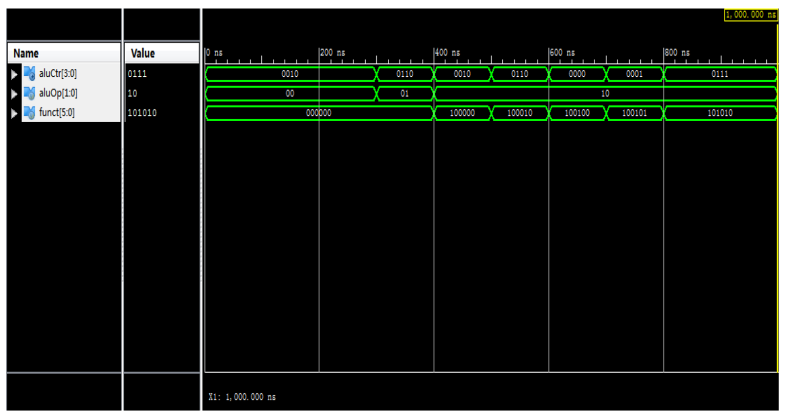
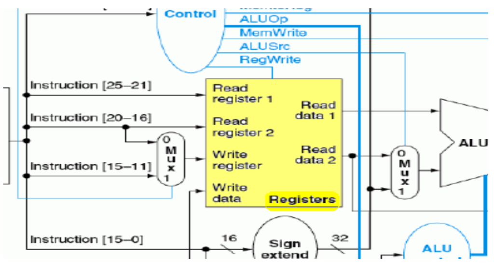

Advanced MIPS CPU Simulator with Multi-Cycle/Pipeline
Jiyuan Shen
Goal
To develop a MIPS CPU simulator with multi-cycle and pipeline.
My Work
♣ Developed simulator of each components used in MIPS CPU like instruction mem, data mem, ALU and ALU Control.
♣ Connected all components into an advanced simulator with multi-cycle and pipeline.
♣ Experimented the simulator on a Xilinx Experimental Board in Verilog HDL.
Method
Refer to the report for implementations.
Step 1: Setting up Xilinx environment such as:

Step 2: Control Module: Produce control signals for regDst, aluSrc, memToReg, regWrite, memRead, memWrite, branch, jump and aluOp.
Example: after implementation, test results for R, lw, sw, beq and jump operations are like:

Step 3: ALU Control Module: Decide instruction type based on 2-bit AluOp (output from Control Module) and 6-bit instruction.
Example: after implementation, a random test result is like:

Step 4: Register Module: Read data at any time; write data whtn clock down side:

Step 5: Memory Module: similar to and simplier than the register module.
Step 6: Sign Extension Module: extend 16-bit signed numbers to 32-bit signed numbers. i.e., if the first bit of it is 1, then we extend 16-1 before the original 16-bit number; otherwise 16-0 before.
Step 7: A complete single-cycle simulator: Connect all these modules and experiment. See Lab 5 Report.
Step 8: A complete multi-cycle piprline simulator: Connect all these modules and experiment. Reset clock when it up. See Lab 6 Report.
References
[1] Jiyuan Shen, Advanced MIPS Simulator Code, 2015 [git]
[2] Jiyuan Shen, Control Module and ALU Control Module (in Chinese), 2015 [pdf]
[3] Jiyuan Shen, Register Module, Memory Module and Sign Extension Module (in Chinese), 2015 [pdf]
[4] Jiyuan Shen, A complete single-cycle simulator (in Chinese), 2015 [pdf]
[5] Jiyuan Shen, A complete multi-cycle piprline simulator (in Chinese), 2015 [pdf]